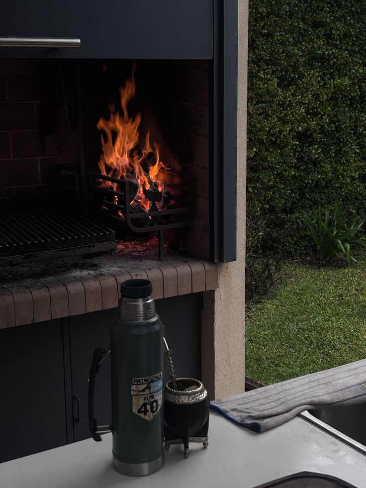
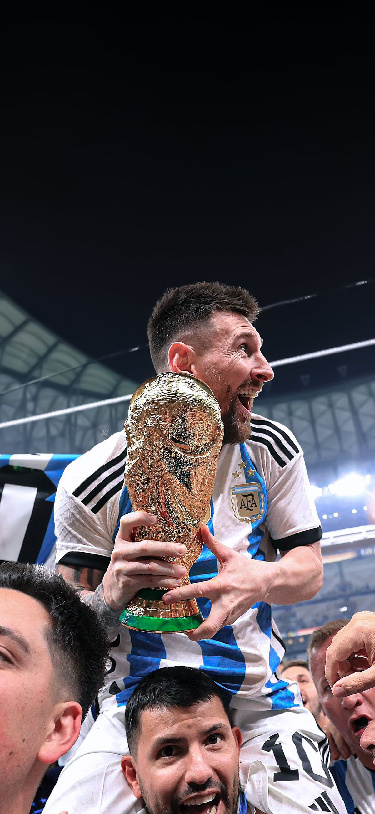
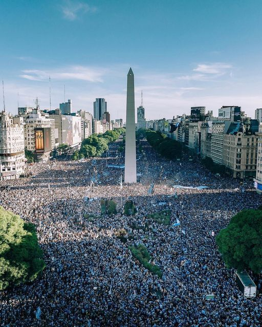
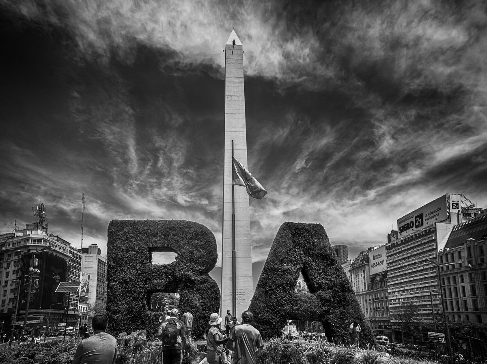

NACIONALIDAD
Nacido en Argentina
Tierra del mate, el dulce de leche, el asado y de campeones



Tierra del mate, el dulce de leche, el asado y de campeones




Mi primer acercamiento formal al mundo de la programación. Ahí empecé a entender cómo funcionan realmente los sistemas, desde escribir las primeras líneas de código hasta desarrollar proyectos más completos.
Actualmente me encuentro ampliando la mirada hacia el lado estratégico de la tecnología. No solo programar, sino entender cómo se gestionan los sistemas, los datos y la innovación dentro de las organizaciones.